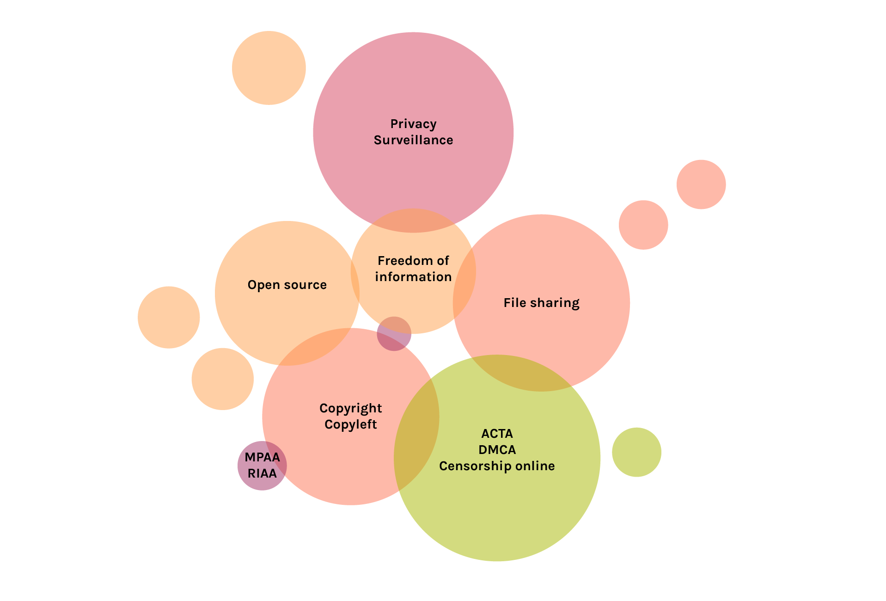
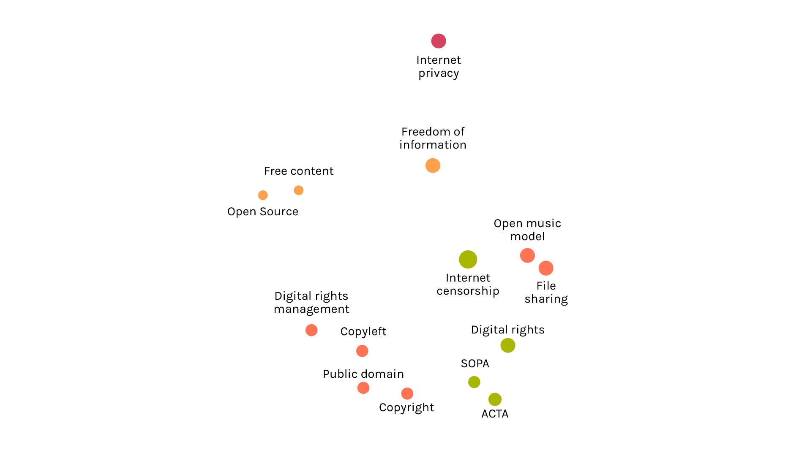

Findings
Reading the global graph, it’s clear that there is a huge cloud of pages strictly conneted between them and some small groups at the edges, which are connected with the cloud but not with a big number of links.
If we consider the denser area, it’s possible to see some cluster which represent some sub-themes.
The more evidents are between the concept of copyright and the laws to fight against file sharing, which is also the center of this research. In this area can be found all the main concepts of the controversy: from the Stop Online Piracy Act (SOPA) to the Digital Millenium Copy Act, from copyright to file sharing.
Privacy and online surveillance are themes close to each other but not at the center of the "cloud" (they are in the bottom).
Between these concepts and the previuos cluster there is an empty space to show that the themes are connected but not so strictly. For this reason it has been decided that privacy and surveillance are not included in this analisys.

Looking at the dimension it can be seen that some pages are bigger than others: they’re the keyword of the reserach.
